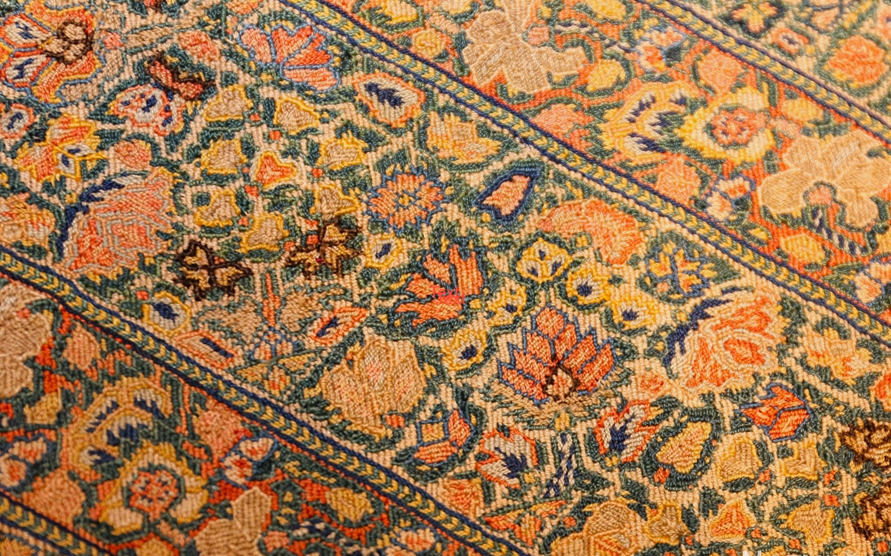

The Nomadic Memory
Post-Safavid Era · 1722–1850When the Safavid Empire collapsed in 1722, the royal workshops fell silent. Court patronage evaporated and the centralized design tradition dissolved almost overnight. What emerged from its absence was something rawer — and in many ways more honest.
Weaving passed back into the hands of nomadic tribes: the Qashqai, the Bakhtiari, the Kurdish weavers of the Zagros Mountains. Without cartoons or court designers, weavers worked from memory — patterns passed down through generations, stored not on paper but in hands and eyes.
Without cartoons or court designers, weavers worked from memory — stored not on paper but in hands and eyes.
The result was a new visual language. Geometric forms replaced sinuous arabesques. Animals, trees, and abstract symbols filled the field. No two rugs were identical — and that was the point. Each piece was not a reproduction of a template, but an expression of a life in motion.

Color variations known as abrash — subtle shifts in hue mid-rug caused by different dye batches — became prized as marks of authenticity. A rug without abrash was a rug made by machine. A rug with it carried the mark of a life: the particular morning when one pot ran dry and another was mixed by different hands.